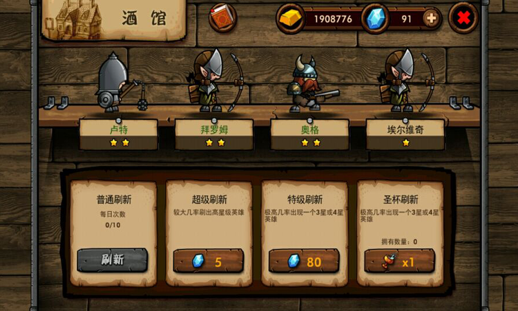

酒吧说明
- 招募英雄的场所。
- 普通刷新和超级刷新次数每日更新。
- 点击酒馆上部的书，可以查看全英雄一览。
- 每个英雄需要500金币招募
刷新内容
| 种类 | 说明 |
|---|---|
| 普通刷新 | 一天可免费刷新10次。通常会出现1星和2星英雄，但也会低概率出现3星，超低概率出现4星英雄。 |
| 超级刷新 | 每日可免费刷新1次。之后需要花费5个钻石，基本上不会出现高级英雄，所以还是直接使用特级刷新比较好。 |
| 特级刷新 | 可用80个钻石刷新一次，必然出现3星英雄，已获得所有3星英雄时会出现低阶英雄或者稀有4星英雄。 刷新1次后，1小时内变为72个钻石刷新一次。 |
| 圣杯刷新 | 用圣杯刷新英雄，以前圣杯是在商店里出售的，现在可从奖励和补偿中获得 |